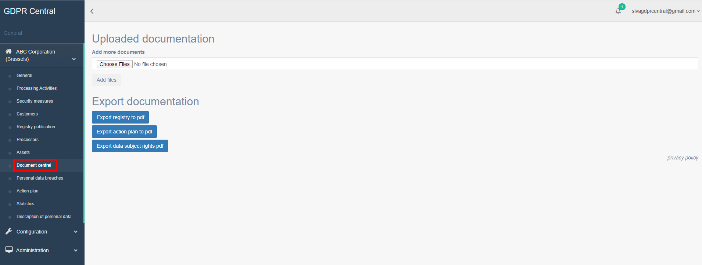
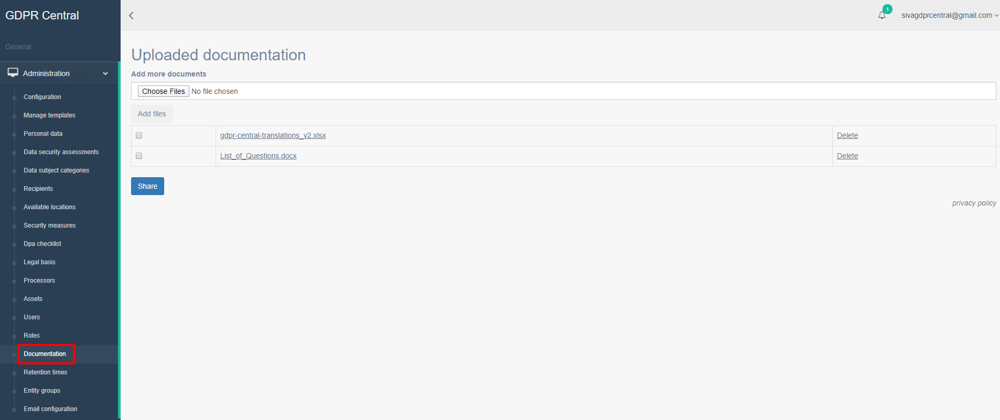

How can I share documents across GDPR Central?¶
GDPR Central makes it very simple to share documents across. It allows you to exchange documents within your organization or with multiple organizations depending on your role.
You can share documents in GDPR Central within your organization by performing the following steps:
Login to GDPR Central using your credentials if not already logged in.
In the left pane, under your organization, click Document central.
To upload a document, under Uploaded documentation, click Choose Files button and select the document you would like to upload. Click Add files to upload the selected document.
You can click Delete hyperlink beside the document to delete it.
You can share documents in GDPR Central within multiple organizations by performing the following steps:
Login to GDPR Central using your credentials if not already logged in.
In the left pane, under Administration, click Documentation.
To upload a document, under Uploaded documentation, click Choose Files button and select the document you would like to upload. Click Add files to upload the selected document.
You can click Delete hyperlink beside the document to delete it.
To share the documents, select the document you would like to share and click Share button. Select groups with whom you want to share the document and click Share button again.
All the groups selected will now be able to view this document.
Note
You can create the groups to which the documents can be shared by navigating to Entity Groups under Administration.